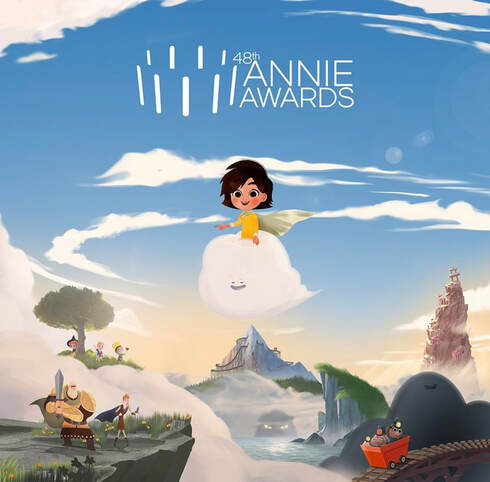

Nixie and Nimbo was nominated “Best Special Production” at the 48th Annual Annie Awards.
Created & Directed By Yves Geleyn
Production Co: Hornet
Animation Director: Michael Luzzi
Animation TD: Mark Pecoraro
Animators: Michael Luzzi, Sami Healy, Stephen Moverly, Casey McDonald, Andres Padilla, Kathleen Gleeson, Hyo Bin Kang, Tom Smo, Meredith Nolan, Hazel Zheng, Courtney Vonada, Seongjin Yoon
Clean Up Animators: Josh Brennan, Emma Jansson
Nixie and Nimbo explores some tools children can use to control their anxiety rather than letting it control them.
